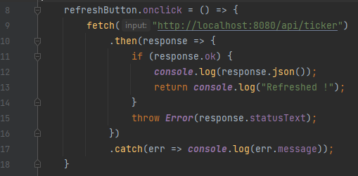

Compte Rendu de TP5
RODRIGUEZ Maxime
Sommaire
Exercice 1 - Treasure Map
-
Faire en sorte que lorsque l'on clique sur le bouton "Refresh", les tickers (les noms des actions en abrégé)
soient affiché dans la console en faisant une requète AJAX (grâce à un fetch) sur l'API REST.
Voici le code qui fetch les tickers

-
On souhaite parcourir chaque ligne de la grille et chaque case de la grille en utilisant une boucle sur
chaque ligne et une boucle sur chaque case d'une ligne.
Ecrire le code qui affiche dans la console le div de chaque case ainsi que sa position en x et y (la
première case est en (0, 0)) en utilisant deux boucles avec des index.
Fonction print_game dans treasure1.html
-
Au lieu de faire des boucles, on souhaite utiliser la méthode forEach définie sur les tableaux.
Expliquer pourquoi on ne peut pas utiliser la méthode forEach sur les children de game. Par exemple, en
écrivant game.children.forEach(...).
Pour résoudre se problème, on va utiliser Array.from() comme cela Array.from(game.children).forEach(...). A
quoi sert la méthode Array.from ?
Commenter le code avec les deux boucles et ré-écrivez un code qui fait la même chose mais en utilisant
forEach.
On ne peut pas utiliser la méthode forEach sur les children car ce sont des HTMLCollection et non des
tableaux, il n'y a que lmength et [] qui fonctionnent
La méthode Array.from permet créer une nouvelle d'instance d'Array venant d'un object itérable ou semblable à
un tableau. Donc on va pouvoir utiliser un forEach en créant une instance d'Array via nos HTMLCollection
-
Modfifier le code pour afficher la case et les coordonées uniquement si l'utilisateur clique sur la case.
-
Commenter le code précédent et décommenter le code avec les deux boucles et ajouter la detection des clicks
de l'utilisateur.
Expliquer pourquoi le code ne marche pas (si vous avez utilisé des var) ?
En supposant que l'on a pas le droit d'utiliser EcmaScript 6 (ES6), on va utiliser la technique IIFE pour
résoudre le problème, modifier votre code en conséquence.
Le code ne pouvait pas fonctionner a cause du fait qu'avec les var, les i et j finissaient en 8, 8 et ça ne
fonctionnait pas bien, logique
-
Si on a le droit d'utiliser la version EcmaScript 6, le plus simple est d'utiliser un let au lieu d'un
var.
Puisque l'on utilise EcmaScript 6, on va aussi en profiter pour utiliser des lambdas (les arrow functions) à
la place des fonctions classique qui n'ont pas de noms.
Commenter les versions avec un for(var et un forEach et écrivez une version avec des let à la place des var
et des lambdas.
-
Bien revenons au jeu, on veut cacher des trésors sur la grille et lorsque l'utilisateur clique sur un DIV
découvrir si il y a un trésor ou pas sur cette case. Pour l'instant lorsqu'une case est cliquer, nous allons
changer sa couleur de background soit en vert si il y a un trésor soit en rouge si il n'y a pas de trèsor.
Une fois qu'une case cliqué, celle-ci ne peut plus être cliqué une seconde fois.
Nous allons découper le problème en deux parties, une qui consiste à générer les trésors, et une second
partie qui indique si il existe un trésor à une case en fonction de coordonées x et y.
On se propose pour cela de créer deux fonctions, une fonction createTreasures() qui renvoie un tableau
contenant 10 trésors (tirer aléatoirement) et une fonction findTreasure(treasures, w, y) qui renvoie vrai si
il y a un trésor du tableau sous la case x, y.
Ecrire les deux fonctions createTreasures et findTreasure et afficher dans la console le résultat de
findTreasure lorsqu'un utilisateur clique sur une case.
-
Il ne nous reste plus qu'a changer le couleur du background en fonction de la valeur de retour de
findTreasure. Pour cela, il suffit de changer la valeur background-color du style du noeud DOM correspond.
Exercice 2 - Treasure Map (2)
-
La grille est pour l"instant définie en dure dans le code, en fait, il est souvent plus facile de générer
les objets DOM au lieu de les pré-créer car on peut changer la taille de la grille plus facilement avec du
code.
Modifier votre code pour générer dynamiquement l'ensemble des DIVs en dessous de game dynamiquement.
-
On peut remarquer que createTreasures et findTreasure ne devrait pas être des fonctions car la première
correspond à une création dun tableau qui est manipuler par le seconde mais une classe.
Créer une classe GameState, c'est comme cela que l'on appel habituellement dans les jeux, qui va contenir le
tableau des trésors dans un champ, avec un constructeur qui initialise se tableau et une méthode
findTreasure qui prend en paramètre uniquement les deux coordonnées (le tableau est accessible car il est
stocker en terme de champ).
Puis modifier votre programme pour créer l'objet GameState en début de programme et utiliser findTresaure là
où il faut.
-
Modifier votre code pour utiliser une table de hachage pour stocker les trésors plutôt qu'un tableau.
Au final, j'ai utiliser les Set car je les aient trouvé plus simple à implémenter et la méthode has me permet
de vérifier si un trésor est déjà présent dans le set. Bon c'est implémenté de manière horrible et
simpliste mais ça fait le travail pour une structure aussi petite
Conclusion Personnelle
En conclusion de ce TP, j'ai pu terminer l'amélioration graphique du jeu et je n'ai pas ressenti de fort problème
pour implémenter les questions
La reprise à été compliqué au début puis ça c'est améliorer et c'est revenu au fur et à mesure que j'ai avancé dans
le TP
Franchement au fond, ça fait un peu de bien de faire du javascript car c'est beaucoup plus permissif que le Java, et
c'est un petit bol d'air frais quand même